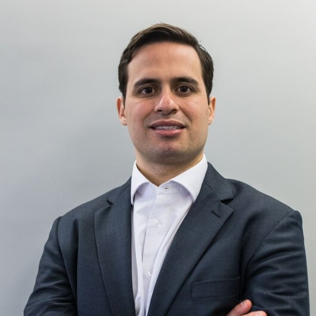

Início · Dr. Thomaz
Dr. Thomaz de Menezes: da UFBA à USP, e de volta a Salvador.
Cirurgião plástico, CRM-BA 22639, RQE 14569, com título de especialista em Cirurgia Plástica pela AMB e pela SBCP. A trajetória, com a fonte de cada informação.
Nas palavras dele
Apresentação

“Sou formado em Medicina pela Universidade Federal da Bahia (UFBA). Em busca de uma formação de excelência, mudei-me para São Paulo, onde realizei residência médica em Cirurgia Geral e Cirurgia Plástica no Hospital das Clínicas da Universidade de São Paulo (USP) […]. Para complementar minha formação, concluí um fellowship em Microcirurgia […]. Em 2018, retornei a Salvador com o propósito de oferecer uma cirurgia plástica moderna, segura e baseada em evidências científicas.”Apresentação na Doctoralia
No mesmo texto, ele descreve o compromisso com o paciente: “oferecer um atendimento próximo, transparente e pautado na ética, para que cada decisão seja tomada com confiança”.
Formação
Formação
- 2010 · MedicinaUniversidade Federal da Bahia (UFBA)
- 2012–2014 · Cirurgia GeralResidência médica na Faculdade de Medicina da Universidade de São Paulo
- 2014–2017 · Cirurgia PlásticaResidência médica na Faculdade de Medicina da Universidade de São Paulo
- 2017–2018 · MicrocirurgiaPrograma de Complementação Especializada em Microcirurgia Reconstrutiva, Faculdade de Medicina da USP
- 2018 · SalvadorVolta à cidade natal e passa a atender em Salvador
Datas conforme os certificados publicados no perfil da Doctoralia. O Guia Saúde Cidades registra o fellowship em microcirurgia e cirurgia reparadora no Instituto do Câncer do Estado de São Paulo e no Hospital das Clínicas.
Credenciais
Títulos e sociedades
Título de especialista em Cirurgia Plástica
Conferido pela Associação Médica Brasileira e pela Sociedade Brasileira de Cirurgia Plástica em 10 de março de 2017.
Membro da SBCP
Na busca pública de cirurgiões da Sociedade Brasileira de Cirurgia Plástica, aparece na categoria “Associado (Membro Especialista)”.
CRM-BA 22639 · RQE 14569
Registro no Conselho Regional de Medicina da Bahia e Registro de Qualificação de Especialista, conforme o perfil da Doctoralia.
Liga de Cirurgia Plástica da FMUSP
Coordenador da Liga de Cirurgia Plástica da Faculdade de Medicina da USP, segundo o currículo Lattes.
Produção científica
Trabalhos e aulas
- Artigo (relato de caso) sobre o fechamento de hemicorporectomia com retalho · Revista Brasileira de Cirurgia Plástica, v. 33, 2018 · primeiro autor
- Artigo sobre o protocolo de tratamento da infecção de ferida de esternotomia após cirurgia cardíaca · Revista Brasileira de Cirurgia Plástica, v. 32, 2017 · coautor
- Análise retrospectiva da correção cirúrgica da ptose palpebral pelo grupo de cirurgia órbito-palpebral do HCFMUSP · 51º Congresso Brasileiro de Cirurgia Plástica, 2014
- Reconstrução mamária: análise dos resultados e complicações de 5 anos de experiência do Hospital das Clínicas da UFBA · apresentação em congresso, 2009
- Aulas: “Tratamento de defeitos cutâneos da mão” (2017), “Reconstrução da parede torácica e abdominal” (2016), “Classificação de retalhos e princípios da microcirurgia” (2016)
Fonte: currículo Lattes, via Escavador.
Imprensa
Na imprensa
- Alô Alô Bahia · março de 2022 · inauguração da clínica no Edifício Vitraux
- Revista Yacht · abril de 2025 · imersão em cirurgia facial nos Estados Unidos
- Jornal O Candeeiro · maio de 2025 · deep plane facelift em Salvador
- CBN Salvador · maio de 2025 · entrevista sobre deep plane facelift
- SBCP Regional São Paulo · vídeo · entrevista com o Dr. Thomaz
Consultório
A clínica
Em março de 2022, o Dr. Thomaz e o Dr. Franklin Mônaco, colegas de turma na UFBA e de residência na USP, inauguraram a clínica na sala 304 do Edifício Vitraux, em Salvador.
“Hoje esse é nosso lugar, a nossa clínica. A ideia é fornecer um ambiente extremamente acolhedor, que torne a experiência do nosso paciente ainda melhor.”Dr. Thomaz ao Alô Alô Bahia, março de 2022
Endereço, horário e mapa na página Onde atendo.
Dúvidas frequentes
Perguntas comuns
Qual é a especialidade do Dr. Thomaz?
Cirurgia Plástica. Ele tem RQE 14569 e título de especialista em Cirurgia Plástica pela AMB e pela SBCP, de 2017.
Ele é membro da SBCP?
Sim. Aparece na busca pública de cirurgiões da Sociedade Brasileira de Cirurgia Plástica, na categoria “Associado (Membro Especialista)”.
Onde ele se formou?
Em Medicina pela UFBA (2010), com residências em Cirurgia Geral e Cirurgia Plástica na Faculdade de Medicina da USP e complementação em microcirurgia reconstrutiva na mesma faculdade.
Agende
Uma conversa para entender o seu caso.
Consultório no Centro Médico Empresarial Vitraux, sala 304, na Federação. Consultas com hora marcada, presenciais ou por vídeo.